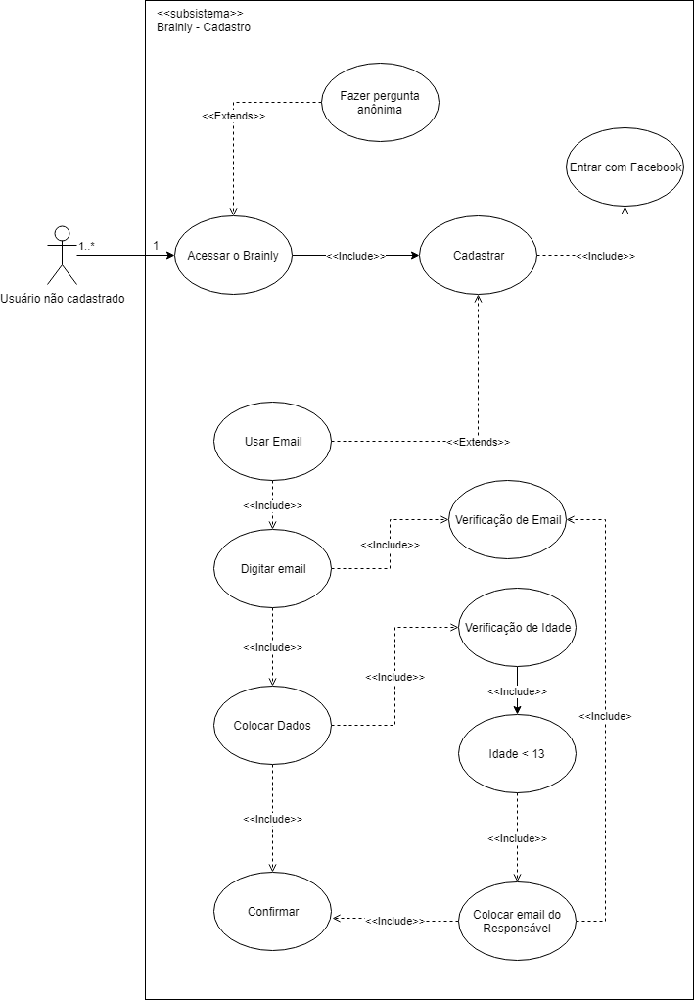

CADASTRO
Versionamento
| Versão | Data | Modificação | Autor |
|---|---|---|---|
| 1.0 | 29/04/2019 | Adição da especificação de casos de uso | Lieverton, Leonardo Medeiros, Paulo Vítor, João Matheus, João Rossi |
Diagrama de Casos de Uso

Especificação de Casos de Uso
1 Breve descrição
Usuário faz o cadastro de uma nova conta na plataforma Brainly para ter acesso a mais funcionalidades, como, responder perguntas.
2 Breve descrição dos atores
2.1 Usuário
Ator que possui acesso às funcionalidade comuns da plataforma, como, fazer perguntas, escrever respostas e comentários, adicionar amigos, entre outras.
3 Pré-condições
Possuir um sistema operacional compatível com alguma das plataformas disponibilizadas pelo Brainly.
Possuir um email para o cadastro ou uma conta no Facebook.
Possuir acesso à internet.
4 Fluxo básico de eventos
1. O caso de uso começa quando o usuário decide criar uma conta no Brainly seja para fazer uma pergunta ou responder.
2. Usuário escolher entrar com uma conta do Facebook.
5 Fluxos alternativos
2.a Cadastrar com email
2.a.4 Usuário com menos de 13 anos.
6 Subfluxo
2.a Cadastrar com email
1. Usuário escolhe usar uma conta de email para cadastro.
2. Usuário digita o email.
3. Email é verificado.
4. Usuário digita seus dados.
5. Usuário confirma seu email.
2.a.4 Usuário com menos de 13 anos.
1. Usuário insere o email do responsável.
2. Email do responśavel é verificado.
3. Responśavel realiza a confirmação de email.
7 Fluxo de exceção
[2] Usuário aperta f5(reinicia a página) acidentalmente, e volta para o passo 2.
[2] Usuário digita um email inválido e recebe a mensagem E-mail incorreto porém a caixa de texto continua preenchida.
[2] Usuário digita um email inválido e recebe a mensagem Nome de usuário deve ter 3-20 caracteres. Escolha outro nome de
usuário.
[2] Usuário digita uma senha inválida e recebe a mensagem Deve ter entre 6-32 caracteres. Marque "Mostrar" para ver o que você digitou.
[2] Usuário digita uma data de nascimento inválida e vai para o subfluxo 2.a.4.
8 Requisitos Especiais
- Responsabilizar o usuário por todos os dados enviados ou transmitidos em conexão com os serviços - BR2.12.
- Ao se cadastrar o usuário terá acesso aos termos de uso e para concluir o registro deverá aceitá-lo - AP1.13.
- A plataforma ter uma boa curva de aprendizagem, sem causar impacto aos novos usuários - INT3.9.
- O cadastro na plataforma deve ocorrer de uma maneira rápida e prática - AP3.3.
- Não utilizar informações de pessoas menores de 16 anos sem autorização - BR2.7.
- Poder monitorar e registrar atividades nos serviços da brainly sem autorização prévia - BR2.11.
- Receber permissão total, no registro de usuário, sobre seus dados pessoais para criar trabalhos derivados, usar para publicidade ou marketing - BR2.13.
- Cobrar por assinatura de serviços - BR2.19.